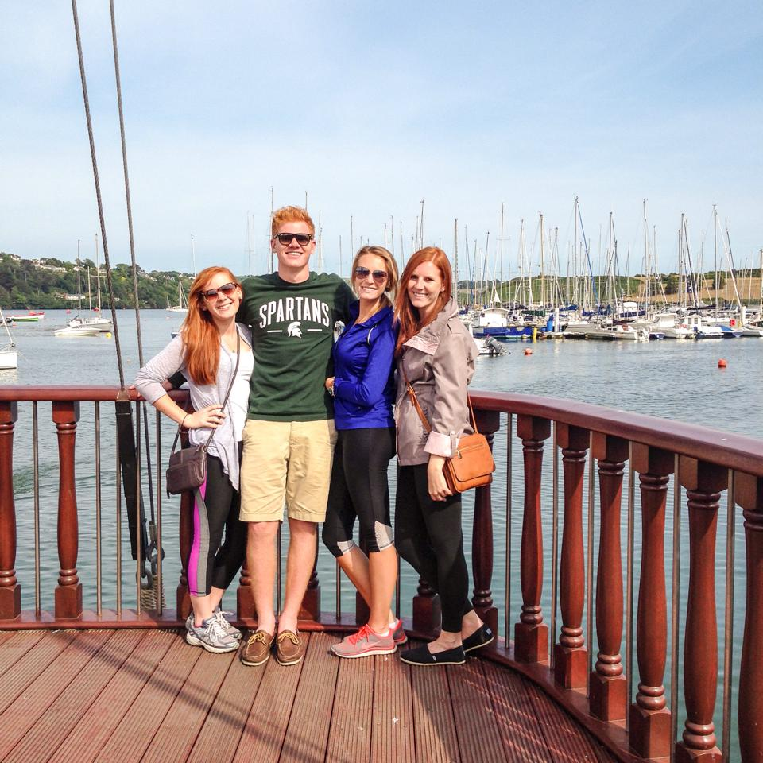

Stop #2: Kinsale, Ireland!
Travel Info
- Airline: Airlingus
- Departed: Heathrow
- Landed: Dublin Airport
- Time: 2 hours
- Hotel: Bed and Breakfast (Contact of owner)
Restaurants & Ratings:
- Fishermans: 3.5
- Black Cat: 4
- Breakfast (at B&B): 3.5
- The Deli: 4
- Down Pub: 4
Sites & Excursions:
- Dingy tour: tons of fun because you got to drive them yourself, but they didn’t go very fast.
- Kinsale Castle: A little bit of a hike to get there, but there are some fun pubs along the way. Great view of the coast from the castle.
- Shopping: very quaint, but cute stores.